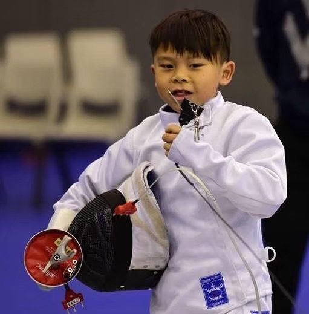
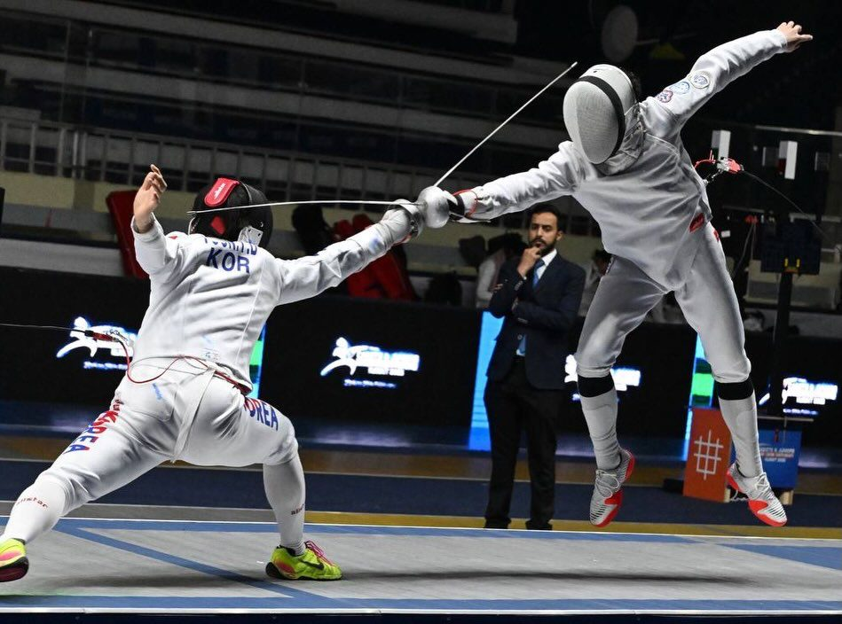

01我的故事
🎯 展望未來，一觸即發！
從小學二年級開始接觸擊劍，我便立下了明確的目標-登上奧運舞台。憑著對擊劍的熱愛與不懈努力，我一路從地方賽場走向國際舞台：
🏅 小學時期即展現天賦，榮獲全國小學擊劍錦標賽個人金牌，為了追求更高層次的挑戰，小學五年級時，我選擇跳級進入臺北市立中正高中，接受更完整、系統性的訓練。
📈 成長軌跡：
14歲：入選2023青少年國手
15歲：晉升為2024青年國手
16歲：同時入選2025青少年及青年國手
17歲 : 再次入選2026青年國手
🎖 賽場表現：
國一：在111年全中運男子銳劍個人賽榮獲銀牌
國二 : 於112年全中運男子銳劍個人賽榮獲銀牌
國三：於113年全中運勇奪個人與團體金牌
高一：成功連霸，再度摘下113年全中運男子銳劍個人與團體雙金、114年全運會男子銳劍個人銅牌與團體金牌
📊 目前國內排名：
青年組：第一名
成人組：第一名
每一場比賽、每一次訓練，都是我向夢想邁進的重要一步。我將持續努力，朝著奧運的目標全力衝刺，期待在世界舞台上揮劍發光！
💪感謝一路以來支持我的人，也歡迎更多人加入支持我的旅程！

